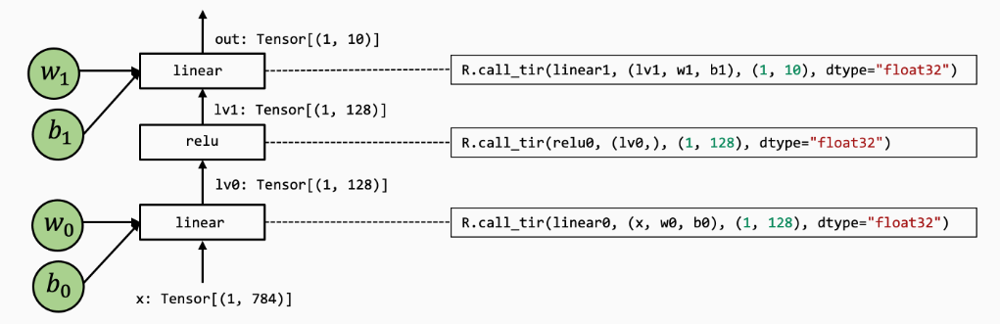
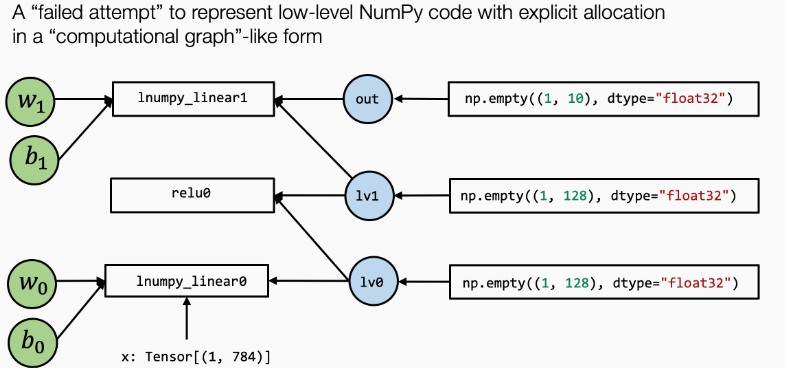

Machine Learning Compilation
本文最后更新于：2024年4月1日 下午
陈天奇的MLC课程，参考
1.概述
定义：将机器学习的算法（模型）从开发形式（如pytorch、tf等通用框架编写的模型描述以及相关权重），通过变换和优化，转化为部署形式（如模型支撑代码、内存控制、接口等）
即，将神经网络模型转变成在特定硬件上运行的张量函数代码
机器学习编译目标：
- 集成和最小化依赖
- 利用硬件加速：利用到每个部署环境的原生加速技术
- 通用优化
2. 张量程序抽象
元张量函数：机器学习模型执行中的每一个步骤（或者说算子？），如linear、relu、softmax
许多不同的抽象可以表达同一种元张量函数，如torch.add和numpy.add，同时，有些机器学习框架也提供模型的编译过程优化，将元张量函数转变成更专门的、针对性的函数
张量程序抽象：一个典型的元张量函数实现包括：
- 存储数据的多维数组
- 驱动张量计算的循环嵌套
- 计算语句
根据抽象出来的共同特征，元张量函数因此可以被一系列有效的程序变换所改变，即优化。
一般情况下，我们感兴趣的大部分元张量函数都具有良好的可变换属性。
TensorIR：TVM使用的张量程序抽象
前提：大多数的机器学习编译可以视为张量函数之间的变换
示例：一个经典的点积 + relu 网络
1 | |
在底层，numpy可能使用循环和算术运算实现上述操作：
1 | |
TensorIR实现：
1 | |
ir_module是TVM编译的最小完整单元，在TVM前端，其通常包括一个或多个relay（一个relay通常对应一个端到端模型），在经过如autoTVM、tirPasses之后relay被分解成一个或多个primFunc
块是tensorIR的基本计算单位。定义如下：
1 | |
如vi = T.axis.spatial(128, i) 即表示vi为i的映射，范围为(0,128)，且该块轴属性为spatial（空间轴），而vk的属性则为reduce规约轴。（可以理解为空间轴是原本就在的，规约轴是在上面做滑动的）
块轴加属性的好处是使得vi，vj，vk独立于外部的循环嵌套i，j，k，同时也对外部循环正确性做了二次验证。同时这些附加信息也有助于机器学习编译分析，比如说，我们总是可以在空间轴上做并行化，但在规约轴上做并行化则需要特定的策略
如果觉得自定义属性比较麻烦也可以一键绑定
1 | |
tensorIR的元张量函数变换
tensorIR引入了名为Schedule的辅助结构，允许我们进行方便的元张量函数变换
这是原来的：
1 | |
使用Schedule进行变换：
1 | |
此外，块之间也可以通过变换完成组合
1 | |
此外还介绍了另一种原语decompose_reduction，用于将语块中元素的初始化与规约更新分开：
这也是 TVM 在以后编译的时候隐式做的，所以这一步的主要目的是让它显式，看看最终效果
1 | |
构建与运行
1 | |
在最后的结果中，TVM变换后的函数运行时间相比原先的TVM函数大幅缩短，为什么不同的循环变体会导致不同的时间性能呢？
关键在于CPU的访存策略，由于局部性原理，CPU在读取内存某元素时会尝试将该元素附近的元素一起获取到缓存中（cache块？特么OS快忘干净了😅）。因此具有连续内存访问的代码通常比随机访问内存不同部分的代码更快。
3. 端到端的模型执行
现在考虑一个基础的两层神经网络，由2个MLP和1个relu组成（简化问题，删除最后的softmax）
numpy实现：
1 | |
底层实现：
1 | |
该模型的TVMScript实现：
1 | |
引入了一个新的 @R.function 即Relex函数，是一种表示上层神经网络执行的全新抽象

注意到，其中call_dps_packed将我们的元函数嵌入到计算图中，其主要作用是满足目标传递的调用约定，即 pure 或 side-effect free ，函数只从其输入中读取数据并输出返回结果，而不改变程序的其他部分，这可以方便我们隐藏调用底层元函数的细节
如果只是像numpy实现中那样：
1 | |
计算图可能会变成这样：lv0既是lnumpy_linear0的入参，也是lnumpy_relu0的入参，其余同理

计算图通常具有以下性质：
- 框的每个输入边对应于操作的输入
- 每个出边对应于操作的输出
- 每个操作可以任意重新排序，直到边缘的拓扑顺序
当然，numpy的底层同样也使用了如lnumpy_call_dps_packed的类似调用
此外，注意with R.dataflow(): 是一个帮助我们标注程序计算图范围的方式，后面的构建运行就不多说了
4. 自动程序优化
这一章主要讲随机调度变换，当我们无法决定原张量函数优化的每一个细节时，可以使用机器的一些随机变换做法
1 | |
上述代码中，用到了 sch.sample_perfect_tile 来随机拆分循环。它会将输入的循环的长度进行随机分割，例如原始j =128 时，就可以分割为 [8,16]、[32,4]、[2,64] 等等，可以发现，每次运行时该函数的采样都不一样
此外还讲了一些随机搜索的东西，大概类似超参数的网格搜索之类的，在TVM里叫meta_schedule，主要还做了以下事情：
- 跨多个进程的并行基准测试
- 使用代价模型
cost model进行代价评估，这样可以避免每组都进行基准测试 - 根据历史轨迹来进行遗传搜索，而不是每次都随机采样
关键思想就是使用随机变换来指定好的程序的搜索空间，使用 tune_tir API 帮助在搜索空间内搜索并找到最优的调度变换
前面几章内容总结，就是为什么通过编译可以使模型运行更快（cache空间局部性），以及怎么样编译可以更快（元张量函数变换），同时也介绍了一些随机变换的方法（网格搜索），感觉随机变换的算法才是MLC性能的核心，也就是自动调优，TVM后面似乎用到了一些 autoTVM、autoSchedule 之类的方法进行 auto tune，这也是我需要重点关注的部分
5. 与机器学习框架的整合
如何将机器学习模型从现有框架引入MLC，一些API的基础教程，参考 https://mlc.ai/zh/chapter_integration/index.html
6. GPU硬件加速
在GPU环境下的MLC流程，第一部分主要讨论CUDA，第二部分讨论专门的GPU环境，后面再看吧
7. 计算图优化
提供了一些算子融合的基础代码，也不太想看